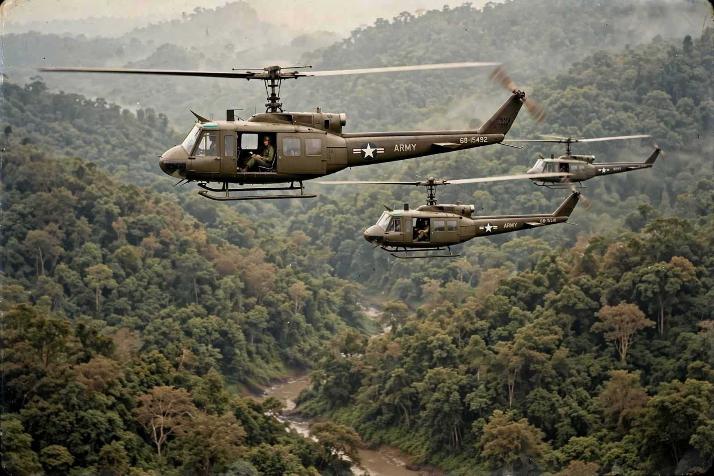

The Vietnam War (1955–1975) was a conflict in Vietnam, Laos, and Cambodia between North Vietnam, supported by the Soviet Union, China, and other communist states, and South Vietnam, supported principally by the United States and other anti-communist allies. It was the second phase of the Indochina wars and a defining proxy conflict of the Cold War. North Vietnamese and Viet Cong forces ultimately prevailed: Saigon fell on 30 April 1975, and Vietnam was reunified under communist rule the following year.

| Vietnam War | |
|---|---|
| Date | 1 November 1955 – 30 April 1975 |
| Location | South Vietnam, North Vietnam, Cambodia, Laos |
| Result | North Vietnamese victory; reunification of Vietnam |
| Belligerents | North Vietnam, Viet Cong, Khmer Rouge, Pathet Lao vs. South Vietnam, United States, South Korea, Australia, Philippines |
| Casualties | Estimates vary widely: ~1.3–3.4 million Vietnamese deaths; 58,220 US military deaths |
France's defeat at Dien Bien Phu in 1954 ended the First Indochina War, and the Geneva Accords divided Vietnam at the 17th parallel. When nationwide elections were not held, the communist North under Ho Chi Minh and the US-backed South under Ngô Đình Diệm consolidated rival states. An insurgency by the southern Viet Cong, directed and supplied by Hanoi via the Ho Chi Minh trail, grew from the late 1950s.
American involvement deepened under Presidents Kennedy and Johnson. The 1964 Gulf of Tonkin incident led Congress to authorise open-ended escalation; regular US combat troops landed in 1965, and troop strength peaked at about 543,000 in 1969. The United States conducted massive bombing campaigns — Rolling Thunder against the North and extensive strikes in the South, Laos, and later Cambodia — dropping more tonnage than in all of the Second World War, and used defoliants such as Agent Orange.
The 1968 Tet Offensive, a coordinated surprise attack across South Vietnam, was a military defeat for the Viet Cong but a strategic and psychological blow to American confidence, fuelling the US anti-war movement. President Nixon's policy of "Vietnamization" withdrew American troops while expanding bombing; the war's spread into Cambodia helped bring the Khmer Rouge to power. Revelations of atrocities such as the My Lai massacre and the publication of the Pentagon Papers deepened domestic opposition.
The Paris Peace Accords of January 1973 ended direct US military involvement. Fighting between North and South continued, US aid was cut, and in spring 1975 a conventional North Vietnamese offensive overwhelmed the South. Saigon fell on 30 April 1975 as American helicopters evacuated the embassy; Vietnam was reunified in 1976.
The war killed millions, devastated Vietnam's environment and infrastructure, and left legacies of unexploded ordnance and dioxin contamination. In the United States it produced lasting debates over military intervention, media coverage of war, and trust in government, along with long-term health effects on veterans. Vietnam later fought brief wars with Cambodia (1978) and China (1979) before launching market reforms in 1986.